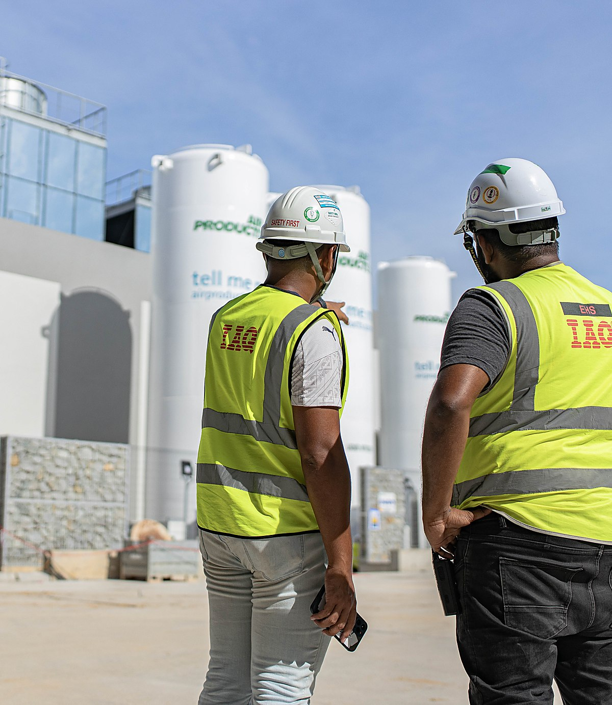
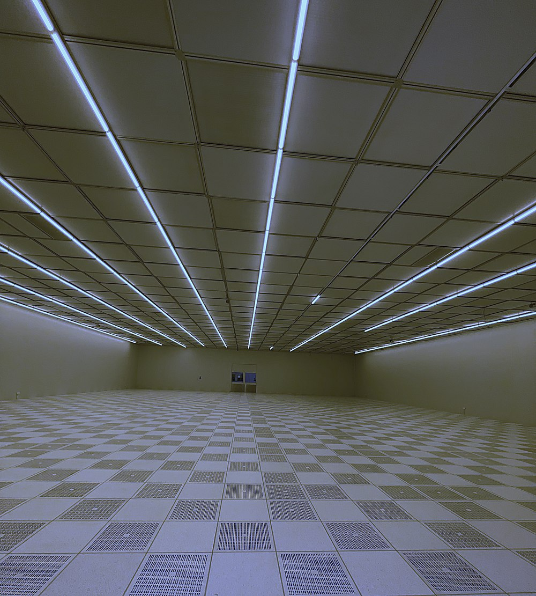
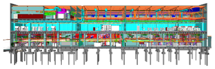
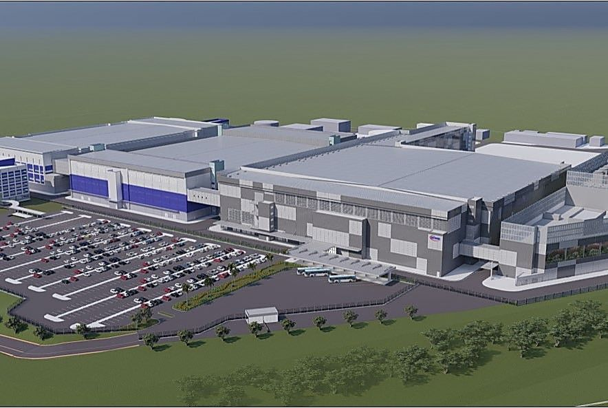
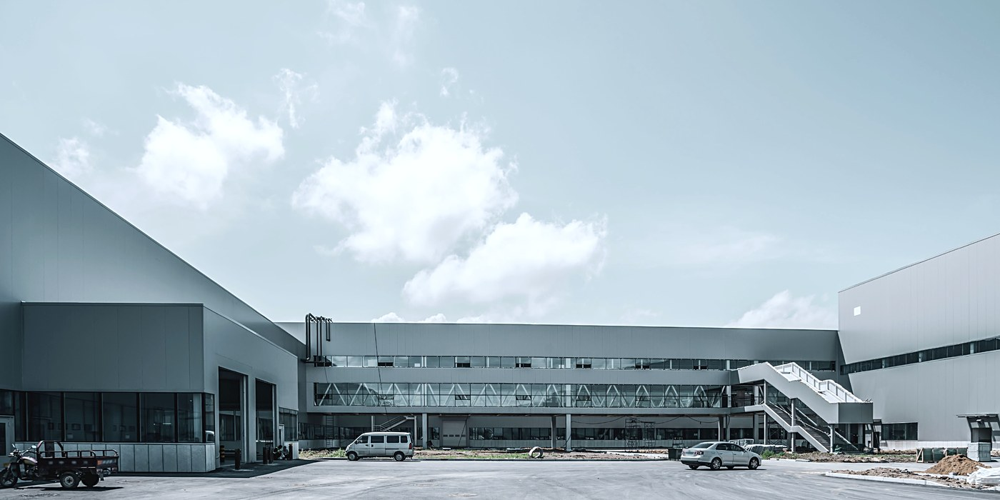

01
Structure
Greenfield and brownfield CSA
Seventeen layouts to build a new slide from. Each one is shown filled, then empty with a line in every box.
Cleanroom critical delivery for semiconductor, data centre, EV battery, pharmaceutical and energy.
Prepared for · Client name · October 2026A sentence under it saying who it is for and what it covers.
Prepared for · client · dateSections 02.1 to 02.47

What this part covers
The case in one line, and what stands behind it.
Cleanrooms, process utilities and tool hookup for the industries where contamination control, precision and compliance are absolute. Self-performed, under one contract.

One line under it saying what the page is for.
Two or three sentences carrying the argument. Say what is true, what it is worth, and leave the rest to the next page.
Where the work went in 2026.
Projects completed since 1995
Cleanroom built-up area
Engineers, supervisors and crew
Offices across three continents
One line under it saying what the page is for.
What the figure counts, one line
What the figure counts, one line
What the figure counts, one line
What the figure counts, one line
Six packages under one contract.
One line under it saying what the page is for.
The same crews, scoped three ways.
Management of engineering, procurement and construction.
Full turnkey from conception to operation.
Energy and facility management after handover.
One line under it saying what the page is for.
One sentence saying what it is.
One sentence saying what it is.
One sentence saying what it is.
Board, executive and the four lines.
One line under it saying what the page is for.
Who the client deals with, day to day.
One line under it saying what the page is for.
One holding company, four operating businesses.
One line under it saying what the page is for.
Five stages, one accountability.
Every package runs the same five stages, whoever holds the contract.
One line under it saying what the page is for.
One sentence saying what the process is and where it starts.
The turns that made the company.
Incorporated as a cleanroom specialist
KLCC district cooling, a national first
India, the United States and Ireland open
Western Digital PJ, a first in the region
SilTerra, Soitec, Infineon, Microsoft
One line under it saying what the page is for.
One line on what happened
One line on what happened
One line on what happened
One line on what happened
One line on what happened
Six systems, one model, one contract.
Greenfield and brownfield CSA
Up to 33kV substations
ISO 3 to ISO 8

Every system on this page is installed in the same building, by IAQ’s own crews, under one programme.
Water, chemical, gas, exhaust
FMCS, BMS, PA
Progressive install
One line under it saying what the page is for.
What it covers, four words
What it covers, four words
What it covers, four words
One sentence under the visual saying what the whole thing adds up to.
What it covers, four words
What it covers, four words
What it covers, four words
One project, what it was and what it took.

One line under it saying what the page is for.
Six quarters, from award to handover.
One line under it saying what the page is for.
What each grade means and where it is used.
| Class | ISO grade | Particles per m³ | Typical use | Delivered |
|---|---|---|---|---|
| Class 1 | ISO 3 | ≤ 1,000 at 0.1 µm | Advanced-node lithography | Yes |
| Class 10 | ISO 4 | ≤ 10,000 at 0.1 µm | Wafer fabrication | Yes |
| Class 100 | ISO 5 | ≤ 3,520 at 0.5 µm | Photomask, test and assembly | Yes |
| Class 1K | ISO 6 | ≤ 35,200 at 0.5 µm | Medical device, parenteral | Yes |
| Class 10K | ISO 7 | ≤ 352,000 at 0.5 µm | Pharmaceutical, GMP | Yes |
| Class 100K | ISO 8 | ≤ 3.5 m at 0.5 µm | Packaging and support areas | Yes |
One line under it saying what the page is for.
| Column | Column | Column | Column | Column |
|---|---|---|---|---|
| Row label | Value | Value | Value | Called out |
| Row label | Value | Value | Value | Called out |
| Row label | Value | Value | Value | Called out |
| Row label | Value | Value | Value | Called out |
| Row label | Value | Value | Value | Called out |
| Row label | Value | Value | Value | Called out |
The rooms that cannot fail.
Thirty-one years of cleanroom critical delivery, on three continents.
One line over the photograph.
A sentence under it, if the line needs support. Otherwise leave it out.
Tell us the class, the programme and the constraint. We will tell you what it takes.
A sentence saying what you want to happen next.
Three parts, and what each one answers.
One line under it saying what the page is for.
What the people who hired us say about it.
They self-performed the packages that usually slip. That is the whole reason the fab opened on time.
One line under it saying what the page is for.
The quotation, two lines at most. Cut it back until only the part worth repeating is left.
The same hall, before handover and in production.

Structure complete, services roughed in, no classification yet.
Classified, commissioned and handed over to the client’s team.
One line under it saying what the page is for.
One or two sentences on the state it started in.
One or two sentences on the state it ended in.